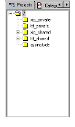

Projects Pane
When you first launch the model browser, the Projects pane is selected, displaying your selected information model as project directories. Selecting a project directory provides you with a focus or context (the scope) for the particular source files you would like to explore. Folder icons represent projects and subprojects. You can double-click any project icon to navigate expand individual folders in the project hierarchy, or click the +/- beside each folder to navigate.

When you make a selection of a project directory and switch to another pane in DIScover, only the source files associated with that project are available for scanning and querying. You may want to select a specific low-level directory to limit query results, or your highest level project directory for the most comprehensive querying capabilities.